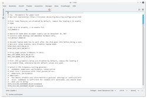

Kate
Dieser Artikel wurde für die folgenden Ubuntu-Versionen getestet:
Ubuntu 16.04 Xenial Xerus
Ubuntu 14.04 Trusty Tahr
Zum Verständnis dieses Artikels sind folgende Seiten hilfreich:
Kate ist der Standardeditor von KDE. Der Name des Programms ist ein Akronym und steht für KDE Advanced Text Editor. Kate ist nicht nur ein einfacher Texteditor, sondern eignet sich auch zum Programmieren. Unterstützt wird Syntaxhighlighting für zahlreiche Programmiersprachen wie zum Beispiel C oder C++ und für Auszeichnungssprachen wie HTML. Kate kann in Zusammenarbeit mit Jovie auch Texte akustisch ausgeben. Alternativ gibt es auch die abgespeckte Variante Kwrite, die vor allem für ältere Systeme und Anfänger geeignet und Teil von Kate selbst ist.
Installation¶
Kate ist bei Kubuntu bereits vorinstalliert und im K-Menü zu finden unter "Dienstprogramme -> Kate". Bei einer Minimalinstallation oder anderen Ubuntu-Derivaten kann Kate über das Paket
kate
 mit apturl
mit apturl
Paketliste zum Kopieren:
sudo apt-get install kate
sudo aptitude install kate
installiert [1] werden.
Für die deutsche Übersetzung und die eingebettete Konsole müssen noch folgende Pakete installiert werden (bei Kubuntu standardmäßig installiert)
konsole
kde-l10n-de
mit apturl
Paketliste zum Kopieren:
sudo apt-get install konsole kde-l10n-de
sudo aptitude install konsole kde-l10n-de
|  |
| Kate |
Benutzung¶
In Kate wird das Fenster standardmäßig in zwei Bereiche aufgeteilt: Links ist eine Liste der geöffneten Dateien, die sog. Dokumentenliste, und rechts wird der Inhalt der ausgewählten Datei angezeigt. Unterhalb des rechten Bereichs werden zwei Schaltflächen angezeigt, über die man die Datei durchsuchen oder einen programminternen Terminal öffnen kann, was besonders für Programmierer praktisch ist. Zudem praktisch ist die Funktion, über den entsprechenden Eintrag in der Menüleiste Lesezeichen für vorhandene Dateien anzulegen.
In Kate 15.12 ist die Oberfläche sehr minimalistisch gehalten. Es gibt keine Menüzeile und die Liste der geöffneten Dokumente ist ausgeblendet.
Konfiguration¶
Unter "Einstellungen -> Kate einrichten..." finden sich umfangreiche Einstellungsmöglichkeiten. Diese werden in zwei Kategorien unterteilt und können bei unterschiedlichen Kate-Versionen leicht voneinander abweichen:
Programm¶
Hier können Einstellungen vorgenommen werden, die das Verhalten von Kate betreffen:
| Programm | |
| Menüpunkt | Beschreibung |
| "Allgemein" | Hier kann unter anderem das Erscheinungsbild der Dokumenten-Liste sowie das Verhalten der programminternen Konsole konfigurieren. |
| "Sitzungen" | Hier kann eingestellt werden, ob Kate bspw. die Dokumentenliste speichern und beim Programmstart wieder herstellen soll. |
| "Dateiwahl" | Hier kann unter anderem die Werkzeugleiste konfiguriert werden und über "Cursorpositionen merken" und "Filter merken" wieviele Arbeitsschritte von Kate gespeichert werden sollen, damit sie wiederhergestellt werden können. |
| "Dokumentenliste" | Hier kann die farbliche Hinterlegung und die Reihenfolge der Dokumentenliste festgelegt werden. |
| "Erweiterungen" | Wenn vorhanden, können hier die installierten Erweiterungen für Kate (de-)aktiviert und konfiguriert werden. |
| "Externe Programme" | Die hier aufgelisteten Programme können unter "Extras -> Externe Programme" ausgewählt werden. Diese Programme werden mit den Daten des gerade geöffneten Dokumentes gestartet, z. B. mit vorhandenen URLs. |
Editor¶
Hier können Einstellungen für die Editorfunktion Kates vorgenommen werden:
| Editor | |
| Menüpunkt | Beschreibung |
| "Erscheinungsbild" | Hier kann das Erscheinungsbild des Editors sowie die Reihenfolge der Lesezeichen konfiguriert werden. |
| "Schriften & Farben" | Hier können Schriftarten, Hintergrundfarben sowie die Textstile für Hervorhebungen eingestellt werden. |
| "Cursor & Auswahl" | Hier kann man die Position des Mauszeigers automatischen anpassen lassen sowie das Verhalten mit ausgewählten Textabschnitten konfigurieren. |
| "Bearbeitung" | Hier kann unter anderem eingestellt werden, wieviele Zeilen durch die Tabulatortaste übersprungen werden sollen und wann automatisch ein Zeilenumbruch erfolgen soll. |
| "Einrückung" | Hier kann der Einrückungsverhalten festgelegt werden, was insbesondere für Programmierer nützlich ist. |
| "Öffnen & Speichern" | Hier können unter anderem Einstellungen zum Dateiformat gemacht werden und über "Sicherungskopie beim Speichern" kann man Kate automatisch eine Sicherheitskopie der bearbeiteten Datei anlegen lassen sowie sowie deren Prä- und Suffix bestimmen. |
| "Hervorhebung" | Hier können Einstellungen zu den Hervorhebungsregeln für jeden Programmiersprachentyp vorgenommen werden. |
| "Datentypen" | Hier können abweichende Einstellungen für Dokumente bestimmter MIME-Typen konfiguriert werden. |
| "Kurzbefehle" | Hier können die Tastenkürzel für Kate konfiguriert werden. |
| "Erweiterungen" | Wenn vorhanden, können hier die installierten Erweiterungen für die Editorkomponente von Kate (de-)aktiviert und konfiguriert werden. |
 - Projektseite
- Projektseite  - Handbuch aus der offiziellen KDE-Dokumentation
- Handbuch aus der offiziellen KDE-Dokumentation- Erstellt mit Inyoka
-
 2004 – 2017 ubuntuusers.de • Einige Rechte vorbehalten
2004 – 2017 ubuntuusers.de • Einige Rechte vorbehalten
Lizenz • Kontakt • Datenschutz • Impressum • Serverstatus -
Serverhousing gespendet von